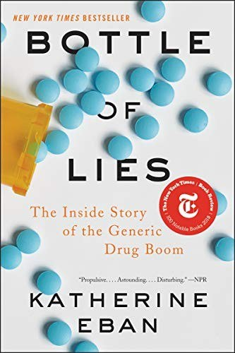

Library › Business & Startups
Bottle of Lies: The Inside Story of the Generic Drug Boom — Summary & Key Lessons

Your generic pill is supposed to be identical to the brand name. For years, in some of the world's largest factories, the data said otherwise.
📖 OPEN THE FULL INTERACTIVE BREAKDOWN →🌐 Read it in Hindi, Hinglish, Gujarati, Tamil & 22 more languages — free, with audio.
💡 The Big Idea
Eban documents how the generic drug system, built to deliver affordable medicine through quality equivalence, was gamed at scale: pre-announced inspections, factories that kept two sets of records, wash cycles that hid contamination, and biostudies run twice with the better data submitted. Ranbaxy's fraud (exposed by whistleblower Dinesh Thakur) ended in a $500 million settlement, but the deeper story is structural: a regulator stretched across the globe, an industry incentivized to treat quality as a cost, and a public that has no way to see inside a plant. The book's general lesson: any trust-based system fails exactly where verification is weakest, and quality is a decision made in the boardroom, long before the factory floor.
🧠 The 8 Key Lessons
Lesson 1: The Two-Ledger Factory
Dewas and Paonta Sahib
Ranbaxy's plants ran parallel realities: official records for regulators, unofficial data for reality, including washed-out contamination results and substituted test batches. Wherever verification can be scheduled and staged, a parallel truth will be built. The defense is not more paperwork; it is unscheduled access, data systems that cannot be edited, and consequences that reach individuals.
📖 Example: Investigator records showed nightly discarding of failing stability samples and re-testing until passing results emerged, with the official dossier showing only the surviving numbers. Read the full example →
⚡ Do this: In your own operations, find where records can be edited after the fact and where inspections can be rehearsed. Make one of the two impossible this quarter.
Lesson 2: Pre-Announced Inspections Invite Theater
The FDA's Long Flight
For years, foreign plants received months of warning before FDA inspections, and the agency's foreign offices were understaffed relative to the number of overseas facilities. The result was performance: spotless lines, rehearsed answers, cleaned batches. Any regulator (or auditor, or enterprise buyer) that announces its verification schedule is measuring theater, not reality.
📖 Example: One investigator described landing to find machinery still warm and freshly repainted walls; a complaint-driven unannounced inspection found the same plant's night shift running what daytime tours never showed. Read the full example →
⚡ Do this: If you rely on vendor audits, move your sampling to unannounced or data-driven intervals. Pay for surprise; rehearsed quality is a costume.
Lesson 3: The Whistleblower's Price and Leverage
Dinesh Thakur's Dossier
Thakur, a Ranbaxy project manager disturbed by falsified data on drugs sold to emerging markets, documented evidence for years, was pushed out, and eventually became a relator in a US False Claims Act case that ended in a $500 million settlement (2013). Whistleblowers are the immune system of trust systems: expensive for them, priceless for everyone else. Institutions that punish dissent are buying short-term comfort with systemic risk.
📖 Example: Thakur's spreadsheets linked specific drugs, batches and patients to the data fraud, giving regulators the map no inspection had produced; his career and safety paid for it. Read the full example →
⚡ Do this: Build a protected, rewarded escalation path for internal bad news. The cost of hearing it early is always less than the cost of a regulator hearing it first.
Lesson 4: Emerging Markets Got the Second Tier
Two Kinds of Patients
Internal communications showed Ranbaxy treating drugs for the US as rigor-bound and drugs for India, Africa and Latin America as data-optional. The fraud's geography maps exactly onto enforcement geography. The general law: quality flows to wherever verification is strictest, and populations under-protected by their regulators receive the system's discarded risk.
📖 Example: Emails referenced the distinction bluntly: products for the US had to be clean because of FDA scrutiny, while weaker markets absorbed the plants' problem batches. Read the full example →
⚡ Do this: If you serve multiple markets, apply your strictest standard everywhere by default. One quality system is cheaper than two reputations.
Lesson 5: Biostudies Run Until They Pass
The Submission Industry
Bioequivalence studies proving a generic matches the brand were sometimes run multiple times, with regulators shown the favorable run and clinical trial sites complicit in the substitution of subjects or samples. The lesson generalizes to any evidence-based approval process (drug trials, financial audits, model validation): evidence can be manufactured, and the pipeline that produces it needs its own audit trail.
📖 Example: Regulatory filings for key products referenced studies whose raw subject data, when later demanded, could not be reconciled with the clinic's own logs. Read the full example →
⚡ Do this: For any evidence you submit to authority, keep raw data immutable and third-party witnessed. The ability to re-derive every number is your real license.
Lesson 6: The 2007 Plea and the Long Belly of Consequences
$500 Million and a Consent Decree
Ranbaxy's US settlement (guilty pleas to felony charges, falsified data, failures to report adverse events) looked like closure; instead the consent decrees, import alerts and lost credibility hollowed the company, which was sold to Sun Pharma in 2014, with fraud-era liabilities following. Regulatory punishment is not a fine; it is a change in the physics of the business: every future filing faces deeper scrutiny.
📖 Example: After the settlement, former customers and regulators treated even clean filings skeptically, a trust discount that outlasted the fines and effectively priced the company for sale. Read the full example →
⚡ Do this: Never model regulatory failure as a payable fine. Model it as a permanent tax on every future approval, sale and partnership.
Lesson 7: Reform Works When It Changes the Factory's Physics
Unannounced and Data-Driven
The post-scandal reforms that actually moved the needle: unannounced inspections, facility-level quality metrics published, import alerts tied to specific plants, and internal whistleblowing channels with teeth. What did not work: memos, pledges and industry self-certification. Verification design, not virtue language, is the lever.
📖 Example: Plants under data-integrity import alerts (sitar howl for the industry) began exporting only after third-party audits and reproducible electronic data systems, a price of re-entry that reshaped sector behavior. Read the full example →
⚡ Do this: When fixing a compliance failure, budget for verification redesign (surprise audits, immutable logs), not for communication campaigns.
Lesson 8: Generics Are Still the System's Bargain: Reform, Don't Panic
The Honest Footnote
Eban is careful: most generic drugs work as promised, and the system delivers medicines billions can afford; the scandal is about the tail of fraud and the fragility of trust, not a case against generics. The mature response is targeted: plant-level transparency, stronger foreign inspection, and personal accountability for executives. Panic that breaks the generic system kills more people than it protects.
📖 Example: Even critics of the industry note that takeaway generics manufactured in India and elsewhere daily save lives at prices the branded system never offered; the reform goal is a trustworthy tail, not a premium-only world. Read the full example →
⚡ Do this: If your trust system fails publicly, communicate the distribution honestly (most fine, tail broken) and fix the tail with verification. Overcorrection creates its own casualties.
✅ 5-Step Action Plan
- Find and make impossible one place where your records can be edited after the fact.
- Move vendor verification to unannounced, data-triggered sampling.
- Build a protected escalation path and reward the messengers of bad news.
- Apply your strictest quality standard in your weakest market, not your strongest.
- Model regulatory failure as a permanent trust tax, never as a one-time fine.
⚠️ When This Doesn't Work
The book centers Ranbaxy (its best-documented case) and extends its lens to industry-wide problems, but not every manufacturer committed fraud, and several companies emerged from the era with strong records; readers should not paint the entire Indian pharma industry with one brush. Legal cases concluded with settlements and pleas as cited; subsequent years saw both continued violations and genuine reform at various firms. Eban's reporting is rigorous and sourced, but the industry has disputed portions of her framing.
💀 The Graveyard Proves It
💊 Ranbaxy — India's Pharma Crown Faked the Data Behind the Pills. Burn: $500M US fine; the brand's soul. Read the full case study →
💬 Best Quotes from Bottle of Lies: The Inside Story of the Generic Drug Boom
- “Quality is a decision made in the boardroom, not on the factory floor.”
- “The pill you swallow is a leap of faith across an ocean, taken on the strength of paperwork.”
- “Fraud in generics was not one company's sin. It was a system's blind spot, found and farmed.”
- “The safest factory in the world is the one that expects a knock at any hour.”
Interactive version: mark lessons as read, listen in your language, share quote cards.